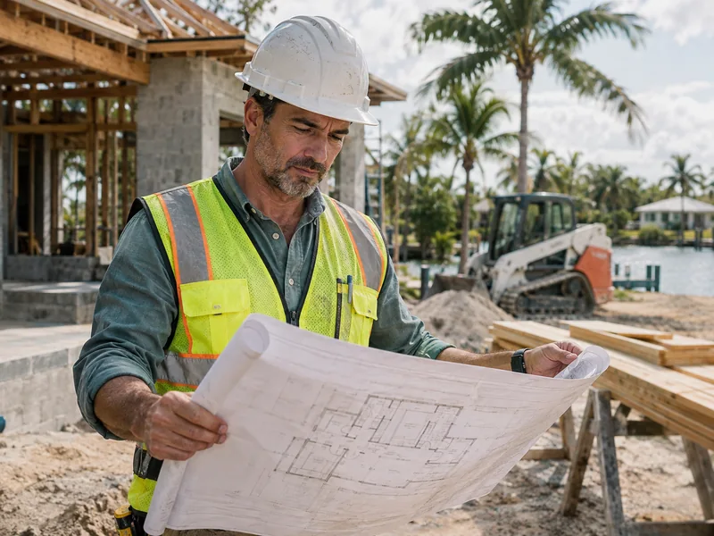
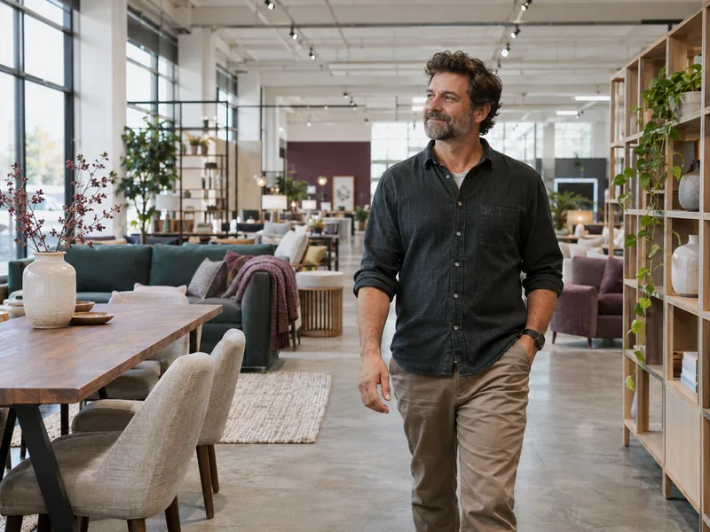
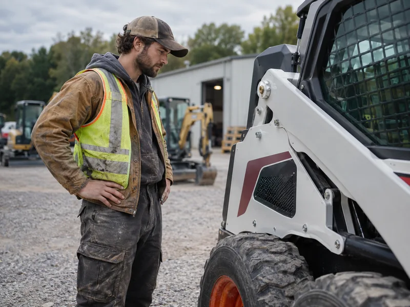

Comparación de imágenes
Abre cualquier foto para verla a tamaño completo. Las escenas se generaron con IA y muestran personas ficticias.
Terminal de pago
Transporte
Restaurantes

Construcción

Salones y med spas
Comercios de alto riesgo

Financiamiento empresarial
Procesamiento de alto riesgo
Servicios de pago
Préstamos a plazo


Líneas de crédito

Préstamos SBA
Financiamiento de equipos
